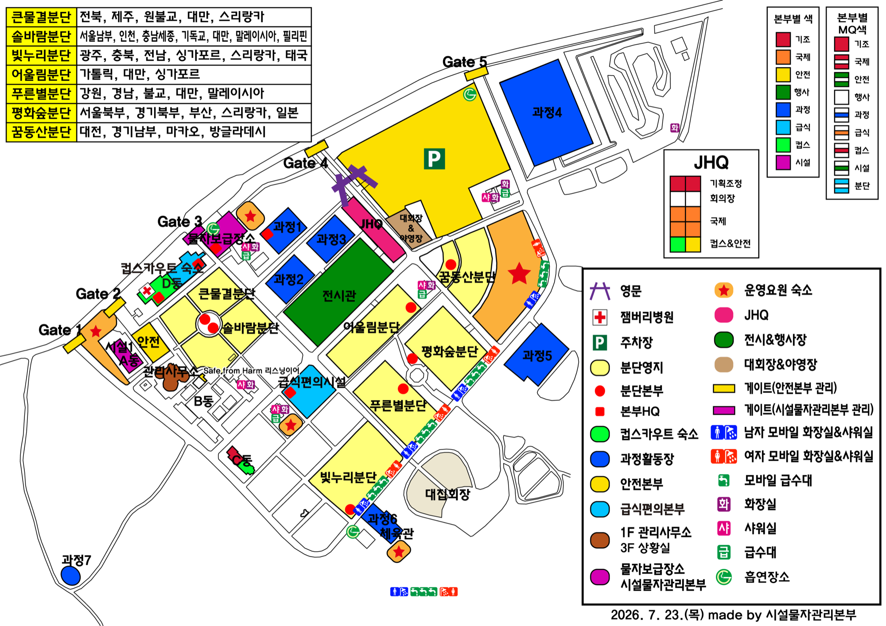

잼버리 운영 계획서(문서·PDF)와 카드뉴스·현장 사진을 구분해 보관합니다. 서버에 저장되며, 아래 구분 탭·태그·검색으로 찾아 재사용하세요. 파일 1개당 100MB까지 · 사진은 자동 축소됩니다. (삭제는 올린 사람·관리자)
운영 캘린더 (일요일 시작)
휴지기한국 대표단 D-40~22외국 대표단 D-21~5피날레 D-4~기획작성중완료운영 일정(띠) — 회의·공모전 등 클릭 편집
콘텐츠 리스트 (상태별)
정렬
카드를 클릭하면 종류 · 제목 · 채널 · 링크 · 이미지 · 첨부 · SNS 문구를 편집합니다. 카드를 다른 칼럼으로 끌어다 놓아 상태를 옮기거나(모바일은 카드 하단 버튼), 위 날짜 선택 후 ＋ 콘텐츠 추가로 새 콘텐츠를 만듭니다. 아직 작성하지 않은 빈 슬롯은 기본으로 숨겨 두며 빈 슬롯 보기로 펼칩니다. 변경은 서버에 자동 동기화됩니다.
스카우트 주요 마케팅 캘린더
날짜
행사 · 캠페인
채널
메모
잼버리 외 연간 스카우트 마케팅 일정. 칸을 클릭해 직접 수정/추가하세요. (날짜는 YYYY-MM-DD 또는 2026-03 형식)
잼버리 일자별 시간 일정표
8/2–8/9 · 강원 고성 — 시간(세로) × 날짜(가로) 한눈에 보기
빈 칸을 클릭하면 그 시간에 일정을 추가하고, 블록을 클릭하면 편집합니다. 블록을 드래그하면 이동(전체 기간뷰에서는 다른 날짜로도), 위·아래 가장자리를 끌면 시간 길이가 늘거나 줄어듭니다(모두 15분 단위). 담당 인원을 지정하면 인원·배치에 자동 반영되고, 변경은 서버에 자동 저장됩니다.
홍보부 인원 R&R
역할
이름
담당 업무 (R&R)
담당 채널
연락처
팀
홍보부장 아래 2개 팀으로 구분됩니다. 팀 이름은 팀 헤더에서 직접 수정할 수 있고, 각 인원은 팀 칸에서 소속 팀을 바꿀 수 있습니다. 칸을 클릭해 수정하면 서버에 자동 저장됩니다.
인원별 오프타임
8/3 오후부터 · 오전 09–12 · 오후 14–17 · 저녁 19–22 — 표시된 칸은 배정 불가
오프타임은 8/3 오후부터 지정할 수 있습니다(빗금 칸은 지정 불가). 각 인원이 쉬는(배정 불가) 시간대를 클릭해 지정하면, 그 시간과 겹치는 일정에는 잼버리 일정표에서 해당 인원을 담당으로 배정할 수 없습니다.
현장 배치 (일정표 기반)
잼버리 일정표의 담당 지정에서 자동 생성
사람별로 언제 · 어디서 · 무슨 일정을 맡는지 자동 정리합니다. 배치를 바꾸려면 잼버리 일정표에서 일정의 담당 인원을 조정하세요. (배치 항목을 클릭하면 해당 일정이 바로 열립니다.)
담당자 미지정 일정
아직 담당이 배정되지 않은 일정 — 클릭해 담당 인원을 지정하세요
협조 연락처
이름
소속 · 부서
직함
전화
이메일
메모
연결된 일정
협조 · 섭외 시 연락할 담당자 연락처를 한곳에 정리합니다. 칸을 클릭해 직접 수정하세요. 잼버리 일정표의 시간 일정에서 담당자 연락처를 연결하면 여기에 함께 모이고, 연결된 일정을 클릭하면 해당 일정이 바로 열립니다. 변경은 서버에 자동 저장됩니다.
분단 연락망
분단명
소속 연맹
분단장
운영부장
야영안전부장
지원부장
분단별 연락망. 칸을 클릭해 직접 수정하세요. 변경은 서버에 자동 저장됩니다.
대회장 · 야영장 의전 일정
날짜·시간을 입력하면 운영 캘린더와 잼버리 일정표에도 ‘의전’으로 구분되어 표시됩니다. 시간이 비어 있으면 노출되지 않습니다. 성명·직책(인원)별로 묶어 표시되며, 인원 칸(구분·성명·직책)을 고치면 그 인원의 모든 일정에 반영됩니다. 시간은 숫자만, 장소는 현장 지도 구역에서 선택합니다.
구분
성명
직책
날짜
시간 (시작 ~ 종료)
활동
장소
메모
현장 위치 지도
제16회 한국잼버리 야영장 배치도 위에 홍보부 인원 위치를 대략적으로 표시
20:00
지금 기준은 현재 시각의 잼버리 일정표로 인원 위치를 실시간 표시하고, 시간 지정은 슬라이더로 특정 날짜·시각의 배치를 미리 봅니다. 일정이 없는 인원은 기본적으로 JHQ 본부에 모입니다. 특정 인원을 옮기려면 모인 구역을 클릭해 이동하거나 아바타를 드래그하세요 — 수동 지정은 자동보다 우선합니다. ‘수동 배치 초기화’로 다시 자동 표시로 돌아갑니다.

위치는 대략적인 구역 기준이며, 인원은 홍보부 인원 관리 탭의 명단에서 가져옵니다. 일정에 ‘현장 지도 구역’을 지정하면 해당 시간에 정확한 위치로 표시됩니다. 인원을 수동으로 옮기면 체크인 시각이 기록됩니다(말풍선에서 확인).
촬영 요청
언제·어디서 촬영이 필요한지 등록하면 지도에 카메라 핀으로 표시됩니다. 구역을 지정하면 핀이 그 위치에 찍히고, 핀을 클릭하면 해당 요청으로 이동합니다. 촬영을 마치면 완료로 전환하세요.
잼버리식당 식사 메뉴
날짜
조식
중식
석식
잼버리식당 일자별 식사 메뉴(8/3~8/9). 위 토글로 대원 / 운영요원 메뉴를 구분해 편집합니다. 칸을 클릭해 직접 입력하세요.